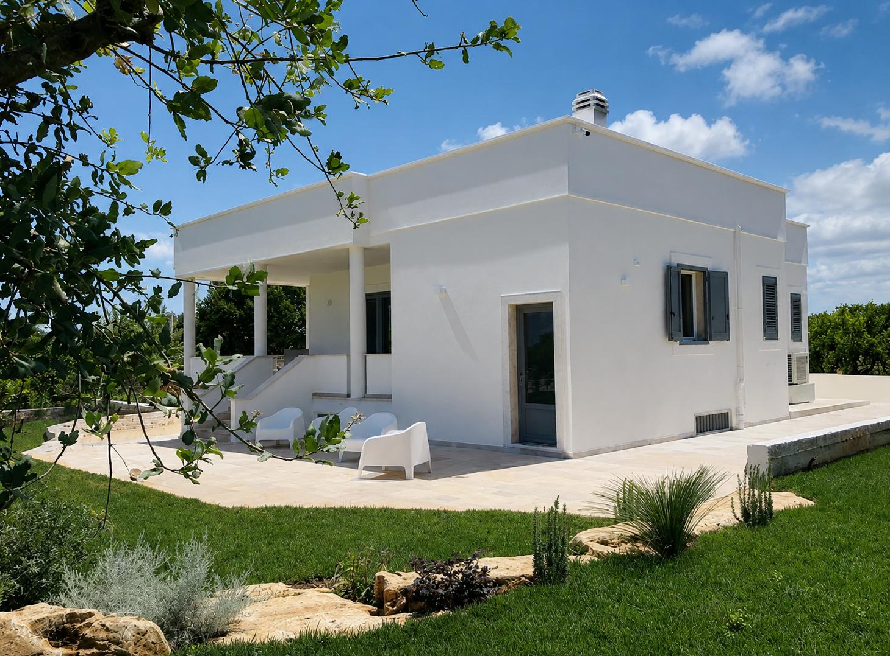
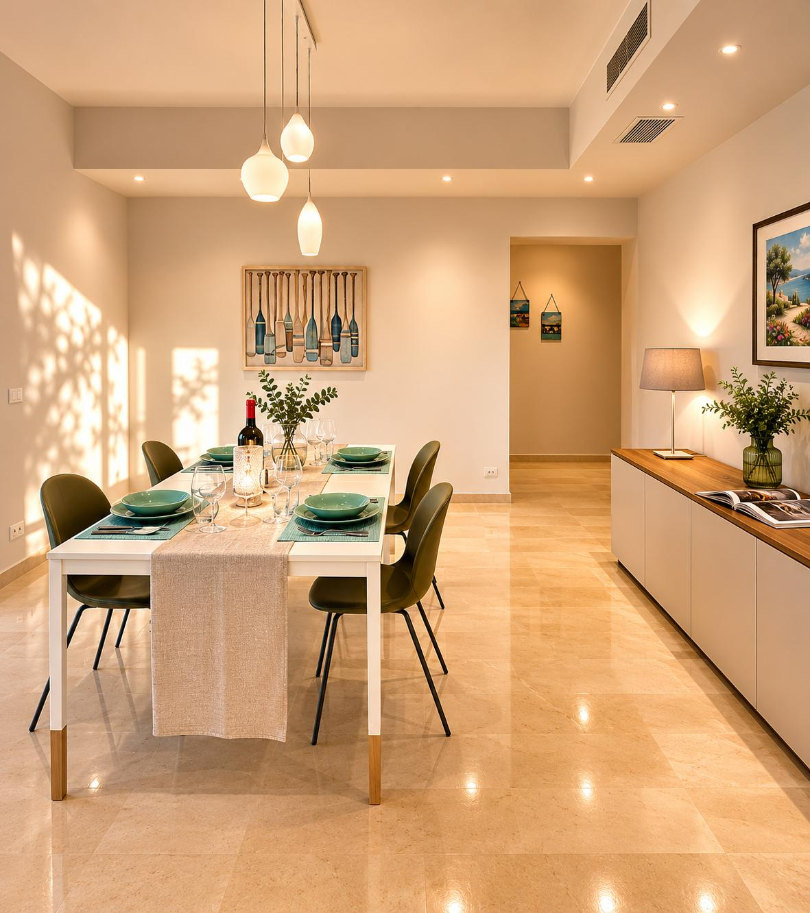
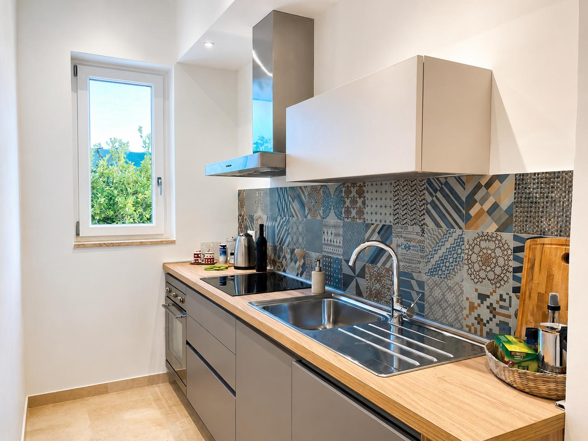
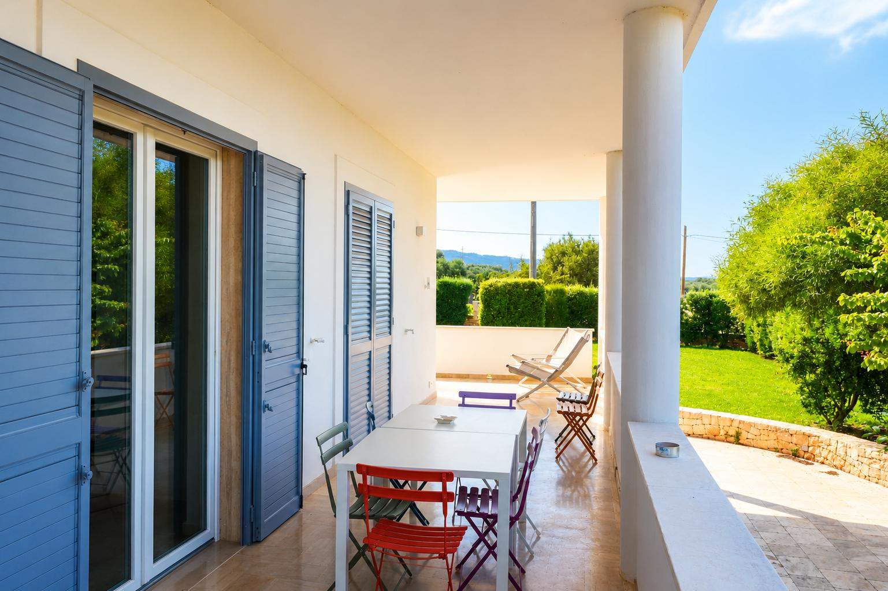
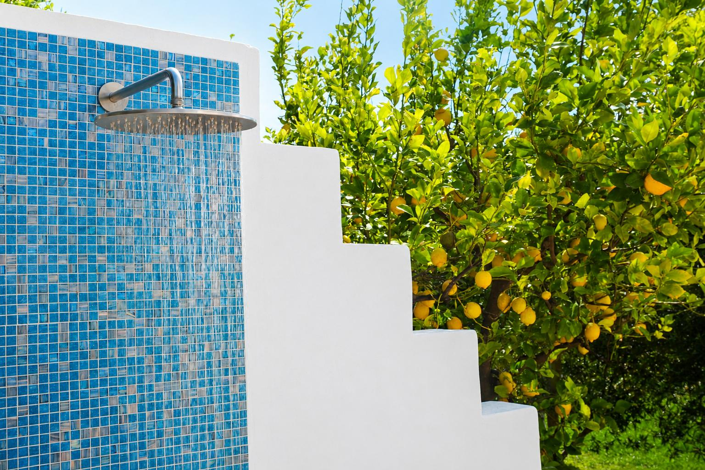

La Villa
Eleganza discreta,
La casa
Una villa indipendente,
ristrutturata con cura.
Immersa nella quiete della campagna di Fasano, tra ulivi e giardini mediterranei, la villa è un rifugio indipendente pensato per chi desidera vivere la Puglia con tranquillità e autenticità. Gli interni, recentemente ristrutturati, accolgono fino a quattro ospiti in ambienti luminosi e confortevoli, mentre all'esterno una veranda arredata, un ampio giardino privato e una doccia all'aperto invitano a trascorrere le giornate tra relax e natura.
4
Ospiti
2
Camere
4.91
Recensioni



Spazi da vivere
Soggiorno
e cucina.
Il cuore della villa è uno spazio aperto che unisce soggiorno e sala da pranzo, con ampie vetrate che portano all'esterno. La cucina è completamente attrezzata — piano cottura, forno, lavastoviglie, frigorifero — ideale per chi ama cucinare con i prodotti del territorio.
- Soggiorno open space
- Cucina completamente attrezzata
- Sala da pranzo interna
- Lavastoviglie e lavatrice
- Smart TV
Zona Notte
Camere da letto,
e bagno.
La camera matrimoniale accoglie con un letto king size e un ambiente essenziale, luminoso e rilassante, affacciato sul verde esterno. La seconda camera dispone di due letti singoli, ideale per ospiti o bambini. Un bagno moderno con doccia walk-in serve entrambe le camere, fino a quattro ospiti in totale.

All'aperto
Il giardino
e gli spazi esterni.
La veranda coperta è il salotto all'aperto della villa: un tavolo da pranzo, sedie a sdraio e la vista sugli ulivi secolari. Il giardino privato regala silenzio assoluto, mentre la doccia esterna è perfetta al rientro dal mare.
- Veranda coperta con pranzo esterno
- Giardino privato
- Doccia esterna
- Vista uliveto secolare
- Parcheggio privato


Servizi
Il necessario,
curato nei dettagli.
Ogni dotazione è pensata per un soggiorno fluido e silenzioso. Comfort contemporaneo nel rispetto del carattere autentico della casa.
- Aria condizionata
- Wi-Fi ad alta velocità
- Parcheggio privato
- Cucina attrezzata
- Veranda coperta
- Doccia esterna
- Giardino privato
- Dotazioni per bambini